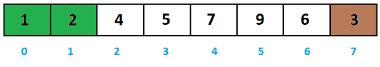

Giới thiệu giải thuật sắp xếp chọn (Selection Sort)
Giải thuật sắp xếp chọn (Selection Sort) là một giải thuật đơn giản. Giải thuật sắp xếp này là một giải thuật dựa trên việc so sánh in-place, trong đó danh sách được chia thành hai phần, phần được sắp xếp (sorted list) ở bên trái và phần chưa được sắp xếp (unsorted list) ở bên phải. Ban đầu, phần được sắp xếp là trống và phần chưa được sắp xếp là toàn bộ danh sách ban đầu.
Phần tử nhỏ nhất được lựa chọn từ mảng chưa được sắp xếp và được tráo đổi với phần bên trái nhất và phần tử đó trở thành phần tử của mảng được sắp xếp. Tiến trình này tiếp tục cho tới khi toàn bộ từng phần tử trong mảng chưa được sắp xếp đều được di chuyển sang mảng đã được sắp xếp.
Giải thuật này không phù hợp với tập dữ liệu lớn khi mà độ phức tạp trường hợp xấu nhất và trường hợp trung bình là O(n2) với n là số phần tử.
Cách hoạt động của Selection Sort:
Giả sử chúng ta có một mảng không có thứ tự gồm các phần tử như dưới đây. Bây giờ chúng ta sử dụng giải thuật sắp xếp nổi bọt để sắp xếp mảng này.
Ví dụ như bài toán sắp xếp dãy a thành dãy không giảm với: a =[4,3,1,5,7,9,6,2]
Để minh họa chúng ta sẽ dùng những phần tử màu xanh để chỉ những phần tử đã được sắp xếp đúng vị trí. phần tử màu nâu đề chỉ phần tử đang nhỏ nhất trong đoạn còn lại.
Ban đầu ta sẽ khởi tạo dãy con bằng a[0], đương nhiên với dãy con một phần tử thì nó đã được sắp xếp
Ta bắt đầu xét từ phần tử có chỉ số 0 đến n-1.
Đầu tiên ta tìm phần tử nhỏ nhất trong dãy trong khoảng từ 0 đến 7. Sau đó hoán đổi cho phần tử a[0].
Tiếp theo tìm phần tử nhỏ nhất trong dãy trong khoảng từ 1 đến 7. Sau đó hoán đổi cho phần tử a[1].
Tiếp theo tìm phần tử nhỏ nhất trong dãy trong khoảng từ 2 đến 7. Sau đó hoán đổi cho phần tử a[2].

Tiếp theo tìm phần tử nhỏ nhất trong dãy trong khoảng từ 3 đến 7. Sau đó hoán đổi cho phần tử a[3]
Tiếp theo tìm phần tử nhỏ nhất trong dãy trong khoảng từ 4 đến 7. Sau đó hoán đổi cho phần tử a[4]..